Integrating LEX with YACC
In the previous documents, we have noted that YACC is used to generate a parser (YACC documentation) and LEX is used to generate a lexical analayzer (LEX documentation). YACC generates the definition for yyparse() in y.tab.c and LEX generates the definition for yylex() in lex.yy.c. We have also noted that yyparse() repetitively calls yylex() to read tokens from the input stream. Till now, for simplicity, we had written a user-defined yylex() in the YACC program. In this section of the document we will use LEX to generate the definition of yylex() and make YACC use this definition for retrieving tokens.
/* Declarations section */
int yylex();
%%
/* Rules */
%%
/* Auxiliary Functions */
We should now compile it as gcc y.tab.c lex.yy.c -o <objectfilename&rt;
NOTE: We must not provide a main() definition in the LEX program calling yylex(), as there already exists a main() function in the YACC program which calls yyparse() which in turn calls yylex().
Recall that yyparse() attempts to parse the given input by calling yylex() to obtain tokens. In the infix to postfix conversion example in the YACC documentation, we had used a user defined yylex() in the YACC program. In that example, the YACC program contains the declaration for the token DIGIT in the declarations section . The definition of the token DIGIT is given in the auxiliary functions section under the function yylex(). Instead, we will now use LEX to generate yylex().
First, we will write a YACC program to declare the tokens and generate yyparse().
Declaring tokens
The token DIGIT must be declared in the declaration section to be used in the rules section. The declaration for a token must be made by specifying it in the YACC declarations section using the %token feature offered by YACC. The following example shows the declaration of the token DIGIT in a YACC program.
in2post.y
%{
#include <stdio.h>
%}
%token DIGIT NEWLINE
%%
start : expr NEWLINE {
printf("\nComplete\n");
exit(1);
}
;
expr: expr '+' expr {printf("+ ");}
| expr '-' expr {printf("- ");}
| '(' expr ')'
| DIGIT {printf("%d ",$1);}
;
%%
void yyerror(char const *s)
{
printf("yyerror %s\n",s);
return ;
}
int main()
{
yyparse();
return 1;
}
The YACC program given above contains the declaration of the token DIGIT in the declarations section. Note that the grammar contains other terminals like '+', '-', '(' and ')' that also are tokens, but are not declared in the declaration section. These tokens are called literal tokens. Literal tokens are tokens with fixed lexemes. This means that the lexeme corresponding to a literal token is a single character or a character string. Such a token do not require an expicit declaration in the YACC program.
NOTE: Conceptually, the lexeme of a literal token can be a character or a string. But, not all versions of YACC support string literal tokens. Hence, in our project we will use only single character literal tokens.
Examples of literal tokens:
'+' '*' '-'
A lexical analyzer returns a token when it finds a corresponding lexeme. In the case of a literal token, the lexical analyzer returns the lexeme itself as the token ( A type coercion to integer is done so that the value returned by yylex() is of integer type.). For example in the above YACC program, on encoutering the pattern '+' in the input file, yylex() returns '+' itself as the token.
In the parser, an expression like :
expr: expr '+' expr
is valid because YACC automatically identifies '+' as the literal token.
We must now write a LEX program that contains the regular definition for DIGIT and the literal tokens.
y.tab.h
Before writing the LEX program, there must be some way by which the YACC program can tell the LEX program that DIGIT is a valid token that has been declared in the YACC program. This communication is facilitated by the file "y.tab.h" which contains the declarations of all the tokens in the YACC program. The "y.tab.h" is automatically generated by YACC when the 'yacc' command is executed with the -d flag.
In order to generate y.tab.c and y.tab.h for the YACC program in in2post.y, do:
user@localhost:~$ yacc -d in2post.y
An example of the contents of y.tab.h file is shown below.
#define DIGIT 253
Note that '253' is a YACC generated constant to represent DIGIT. The constant may vary at different executions of YACC. YACC represents a token by defining a macro identifier corresponding to it.
The y.tab.h file must be included in the declarations section of the LEX program. This makes the token declarartions accessible to the LEX program. We will see an example in the next section.
Defining tokens
The next example example shows the definition of DIGIT and the literal tokens in the LEX program.
in2post.l
%{
#include <
stdio.h>
#include "y.tab.h"
%}
%%
[0-9]+ {
yylval = atoi(yytext);
return DIGIT;
}
"+" return *yytext;
"-" return *yytext;
[()] return *yytext;
[\n] return NEWLINE;
%%
yywrap()
{
return 1;
}
No explicit declaration of the token DIGIT is requied in the LEX program as y.tab.h (which contains the declaration of DIGIT) has been included in the declarations section.
NOTE: As noted earlier we return the lexeme found in case of literal tokens: '+','*','(',')'. Note that yylex() is a function of return type int but the above LEX program makes yylex() return *yytext where yytext is a character pointer. *yytext de-references to the character value pointed by yytext. Returning a character value does not cause an error because the C compiler type-casts the value to integer automatically.
To generate lex.yy.c, do:
user@localhost:~$ lex in2post.l
Once y.tab.c and lex.yy.c files have been generated by YACC and LEX respectively, they can be linked and compiled using the following commands as mentioned earlier. The compilation steps and sample input/output of the above example are shown below:
user@localhost:~$ gcc lex.yy.c y.tab.c -o in2post.exe
user@localhost:~$ ./in2post.exe
11+22-33
11 22 33 + -
user@localhost:~$
Passing tokens from the Lexer to the Parser
Let us consider the YACC and LEX programs above.
When the input
11+22-33
is given to the executable file (in2post.exe)
1. The main() function in y.tab.c begins execution. It calls yyparse() which inturn calls yylex() for tokens.
2. yylex() reads the input and finds that "11" found in the input matches with the pattern for token DIGIT and returns DIGIT.
3. yyparse() which obtains the token DIGIT, shifts it to the parser stack.
4. A reduction (corresponding to the rule expr: DIGIT) takes place. This results in the terminal getting replaced with the non-terminal(expr) in the parser stack
5. The C statement (semantic action) corresponding to the production is executed (i.e., printf("%d ",$1); is executed.). This prints 11.
We will see what '$1' means and why printing '$1' results in printing the value 11 in detail in the next section.
The execution continues in a similar fashion to complete parsing the entire input.
A complete illustration of all the shift and reduce steps is given later. The parsing steps have been summarised in the below table for now.
I/P Buffer
|
yylex() returns
|
Parser stack
|
Parser action on stack
|
C Action executed
|
Output Stream
|
| 11 + 22 - 33 |
|
|
_ |
|
|
| + 22 - 33 |
DIGIT |
DIGIT
|
SHIFT |
|
|
| + 22 - 33 |
|
expr
|
REDUCE |
printf("%d ",$1); |
11
|
| 22 - 33 |
+ |
expr + |
SHIFT |
|
11 |
| - 33 |
DIGIT |
expr + 22 |
SHIFT |
|
11 |
| - 33 |
|
expr + expr
|
REDUCE |
printf("%d ",$1); |
11 22 |
| 33 |
- |
expr + expr - |
SHIFT |
|
11 22 |
|
DIGIT |
expr + expr - DIGIT |
SHIFT |
|
11 22 |
|
0 |
expr + expr - expr |
REDUCE |
printf("%d ",$1); |
11 22 33 |
|
|
expr + expr |
REDUCE |
printf("- "); |
11 22 33 - |
|
|
expr
|
REDUCE |
printf("+ "); |
11 22 33 - + |
Note that yylex() makes a call to yywrap(), when 'End of file' is encountered. We have defined yywrap() to return 1 (We have provided the definition for yywrap() in our LEX file). Recall that when yylex() receives non-zero value from yywrap(), it returns zero to yyparse(). Also recall that yyparse() does not call yylex() once it has returned 0. It return zero to main() function to indicate successful parsing.
We have noted how to integrate the lexical analyzer generated by LEX with the parser generated by YACC. Now, we will learn more about managing attributes using LEX and YACC..
Introduction to attributes
In the last section of the YACC documentation we have noted that it is possible to pass values associated with tokens from yylex() to yyparse(). We had described the term 'attribute' as a value associated with a token. YACC uses yylval to facilitate passing values from the lexical analyzer to the parser. We will now explore how YACC associates attribute values to terminals and non-terminals in a production. We will also explore the usage of YYSTYPE to define custom (user defined )attribute types.
Recall that yylval is a global variable declared in y.tab.c of type YYSTYPE (YYSTYPE is integer unless defined otherwise. We will let YYSTYPE take its default type of integer since it is simpler to understand how attributes are processed in this case. Later we will see how more complex attribute types can be defined and handled).
In the YACC documentation, we had seen an example which illustrates the passing of attributes from yylex() to yyparse(). We use the variable yylval to hold the attribute to be passed. If the programmer were to use LEX to generate yylex(), then the attributes will have to be passed to yyparse() using the same mechanism i.e, using yylval (see example below).
In the LEX program, yylex() returns each token by its name. The attribute associated with each token is assigned to yylval and thus becomes accessible to yyparse(). Note that, all tokens except literal tokens must be declared in the declarations section of the YACC program. The following example is a LEX program which returns a token DIGIT when it finds a number.
%{
#include "y.tab.h"
#include<stdlib.h>
#include<stdio.h>
%}
number [0-9]+
%%
{number}{
yylval = atoi(yytext);
return DIGIT;
}
. return *yytext;
%%
In this example, we want to return the token DIGIT when an integer is found in the input stream. In addition to the token, we need to pass the value found in the input stream to yyparse(). The lexeme found in the input stream is a string which contains the integer found. atoi() is a built-in function of return type int defined in the stdlib.h header file. We use atoi() to obtain the integer equivalent of the lexeme found. The obtained integer value is then assigned to yylval.
The following code segment demonstrates how yyparse() receives the attribute value corresponding to the token DIGIT passed by yylex(). Note that YACC must be run with the -d flag to generate y.tab.h. The LEX program above includes the y.tab.h file in the auxiliary declarations section to import the declarations from y.tab.h.
%{
#include <stdio.h>
int yyerror();
%}
%token DIGIT
%%
start : expr '\n' {printf("\nComplete");exit(1);}
;
expr: expr '+' expr {printf("+ ");}
| expr '*' expr {printf("* ");}
| '(' expr ')'
| DIGIT {printf("%d ",$1);}
;
%%
int yyerror()
{
printf("Error");
}
int main()
{
yyparse();
return 1;
}
Note the semantic action for the production expr:DIGIT
DIGIT {printf("%d ",$1);}
The value corresponding to the token DIGIT, that was assigned to yylval by lex is accessed in YACC using the symbol $1. Recall that values corresponding to the symbols in the handle of a grammar may be accessed using $1, $2, etc according to its position in the production rule.
Generally, we say that in the YACC program, the attribute of a grammar symbol in a production can be accessed using the following syntax: $1 for the first symbol in the body of a production, $2 for the second symbol, $3 for the third and so on. For example consider the following example of a YACC rule.
X: A B C
The attribute value of 'A' is accessed by the symbol $1, value of ‘B' by $2 and 'C' can by $3. The symbol $$ refers to the attribute value of ‘X’ which is the head of the production. Note that the head of a production must be a non-terminal. Hence, it becomes possible to assign an attribute value to the head of a production by assigning a value to $$. In the above example, an attribute value can be assigned to X through an assignment to $$. Hence we extend our notion of an attribute to: "An attribute is a value associated with a terminal or non-terminal grammar symbol".
We will make this clear with an example.
Consider the problem of displaying two numbers in an input stream (ending with a ‘\n’) if they occur as a pair separated by a comma. Also suppose that the numbers must be displayed ONLY after a pair is found. Let us look at a YACC program that solves the problem.
Example: pair.y
%{
#include <stdio.h>
int yyerror();
%}
%token DIGIT
%%
start : pair '\n' {printf("\nComplete"); }
;
pair: num ',' num { printf("pair(%d,%d),$1,$3"); }
;
num: DIGIT { $$=$1; }
;
%%
int yyerror()
{
printf("Error");
}
int main()
{
yyparse();
return 1;
}
We will use the same lex program to receive tokens and token values (attributes).
Note: We have assumed that the attribute values of each symbol is an integer. Later we will see how to allow more complex attributes.
In the above program segment, the first rule displays the value of the numbers for each pair in the input stream. In the action part of the rule, $1 refers to the attribute value of the first num and $3 refers to the attribute value of the and the second num. (Note that $2 refers to the attribute value of the literal token ',' which is the token itself). Since num is a non-terminal, its attribute cannot be set by yylex(). Recall that every non-terminal symbol in the CFG must have at least one production with the non-terminal as the head. The attribute value of a non-terminal must be set by writing semantic rules to set the value of $$ in such productions. Such an attribute value which is “synthesized” by the semantics actions in a production is called a synthesized attribute. In the example, the attribute value of the non-terminal num is synthesized by the following rule:
num: DIGIT { $$=$1; }
The action of the rule sets the attribute value of num (referred to using $$) to the attribute value of DIGIT (referred to using $1).
Sample I/O:
I: 2,5
O: pair(2,5)
I: 3,5,7
O: syntax error
Attribute Synthesis
We have seen that attributes of terminals can be passed from yylex() to yyparse(), whereas attributes of a non-terminal can be synthesized. An attribute of a non-terminal grammar symbol is said to be synthesized if it has been calculated from the attribute values of it's children in the parse tree. Thus the (synthesized) attribute associated with a non-terminal is calculated using the attribute values of the symbols in the handle that it replaces. For example, consider the following grammar:
Z: X {printf("Result=%d",$1);}
X: A '+' B { $$ = $1 + $3; }
The attribute value of X is a synthesized attribute as it has been calculated using the attribute values of the symbols in the handle (A ‘+’ B) that it replaces.
We will look at an example now.
This is a YACC program that evaluates an expression:
%{
#include <stdio.h>
int yyerror();
%}
%token DIGIT
%left '+'
%left '*'
%%
start : expr '\n' { printf("Expression value = %d",$1);}
;
expr: expr '+' expr {$$ = $1 + $3;}
| expr '*' expr {$$ = $1 * $3;}
| '(' expr ')' {$$ = $2;}
| DIGIT {$$ = $1;}
;
%%
int yyerror()
{
printf("Error");
}
int main()
{
yyparse();
return 1;
}
Sample I/O:
I: 2+3*(4+5)
O: 29
Each of the semantic actions in the following rules synthesizes the attribute value for expr by assignment to $$.
expr: expr '+' expr {$$ = $1 + $3;}
| expr '*' expr {$$ = $1 * $3;}
| '(' expr ')' {$$ = $2;}
| DIGIT {$$ = $1;}
;
We will now see how attribute synthesis is managed internally.
The Attribute Stack
Recall that YACC maintains a parse stack to achieve shift-reduce parsing. The parse stack contains grammar symbols (both terminal and non-terminal ) representing the current configuration of the parser. Similar to the parse stack, YACC also maintains an attribute stack to store the attribute value of each grammar symbol in the parse stack.
The attribute stack is synchronous with the parse stack -- synchronous because the i'th value on the attribute stack will be the attribute value of the i'th symbol on the parse stack.
We will see how attribute synthesis is done on input 2+3*(4+5).
1. The main() function in y.tab.c begins execution. It calls yyparse() which in turn calls yylex() for tokens.
2. yylex() reads the input and finds that the lexeme "2" matches with the pattern for the token DIGIT. It assigns ‘2’ to yylval and returns DIGIT. Note that YYSTYPE is assumed to take its default value of integer and hence yylval is set to integer type by YACC.
3. yyparse() which obtains the token DIGIT and its attribute value inside the variable yylval, shifts the token DIGIT to the parser stack and pushes the value of yylval (2) to the attribute stack.

INITIAL PARSE STACK INITIAL ATTRIBUTE STACK
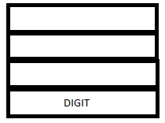
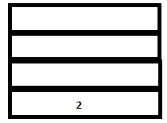
PARSE STACK-AFTER SHIFT ATTRIBUTE STACK-AFTER SHIFT
5. A reduction (corresponding to the rule expr: DIGIT) takes place. This results in the following events:
1. The terminal ‘ DIGIT’ gets replaced with the non-terminal expr in the parser stack.
2. The semantic action {$$=$1} for the corresponding reduction is executed. (This sets the (attribute) value of the non terminal at the head of the rule (‘expr’) to the (attribute) value of the first symbol in the handle (DIGIT).)
3. The value of DIGIT (2) is popped from the attribute stack and the synthesized value of ‘expr’(2) is pushed into it.
Note that at any point in the parser’s execution, the symbols $1, $2, $3 etc., refers to the first, second, third etc. attribute values (of the corresponding tokens) on top of the stack. $$ refers to the attribute value of the non-terminal which is the head of the production. When the non-terminal is pushed on to the parse stack, the value of $$ is pushed on to the attribute stack. $$ refers to the symbol on top of the stack after a reduction has taken place.


PARSE STACK-BEFORE READ ATTRIBUTE STACK-BEFORE READ
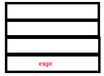
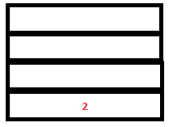
PARSE STACK-AFTER READ ATTRIBUTE STACK-AFTER READ
6. The parser executes a shift action. Now Lex reads and returns the token ‘+’. Since this is a literal token, its value, ‘+’ gets pushed into both the parse stack and the attribute stack after implicit type coercion .


PARSE STACK-AFTER SHIFT ATTRIBUTE STACK-AFTER SHIFT
7. Since there are no possible reductions to be performed, parser executes another shift operation. Lex returns the token DIGIT again as it encounters ‘3’. The token DIGIT gets pushed to the parser stack and its value, ‘3’, gets pushed to the attribute stack.


PARSE STACK-AFTER SHIFT ATTRIBUTE STACK-AFTER SHIFT
8. The reduction by the rule expr: DIGIT takes place. The token DIGIT in parse stack is replaced by ‘expr’. The semantic action {$$=$1} sets the value of ‘expr’ to ‘3. In the attribute stack, the value of DIGIT (3) gets replaced by the value of expr (3 itself).
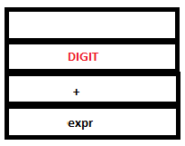
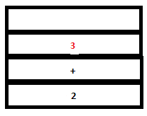
PARSE STACK-BEFORE READ ATTRIBUTE STACK-BEFORE READ
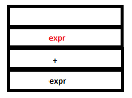

PARSE STACK-AFTER READ ATTRIBUTE STACK-AFTER READ
9. Now even though a valid reduction is possible for expr + expr, the parser executes a shift action. This is because shift/reduce conflict is resolved by looking at operator precedence. Recall shift/reduce parsing. The next token, ‘*’ is returned by Lex. This is again a literal token and is pushed into both the parse stack and attribute stack.
 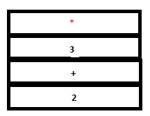
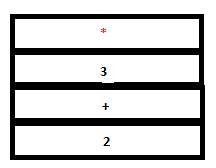
PARSE STACK-AFTER SHIFT ATTRIBUTE STACK-AFTER SHIFT
10. Since there are no matching handles in any of the rules, another shift action is executed. Lex returns ‘(‘ which is again a literal token. The configuration is now
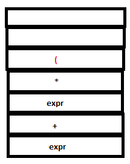
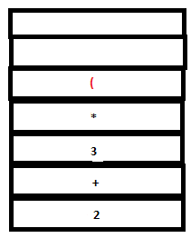
PARSE STACK-AFTER SHIFT ATTRIBUTE STACK-AFTER SHIFT
11. Again, there are no matching rules. So another shift action is executed. Lex returns DIGIT for ‘4’.
 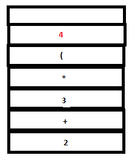
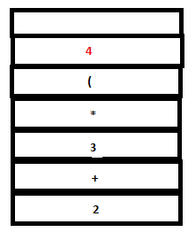
PARSE STACK-AFTER SHIFT ATTRIBUTE STACK-AFTER SHIFT
12. A reduction by expr:DIGIT takes place.
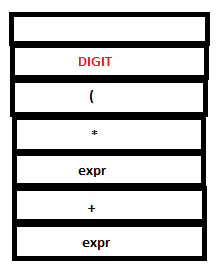

PARSE STACK-BEFORE READ ATTRIBUTE STACK-BEFORE READ
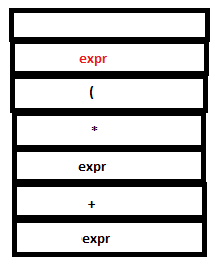
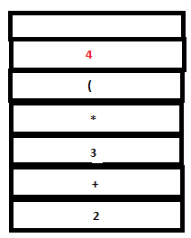
PARSE STACK-AFTER READ ATTRIBUTE STACK-AFTER READ
13. Since there are no matching rules, a shift action is executed. The literal token ‘+’ is returned by Lex and pushed into both stacks by YACC.
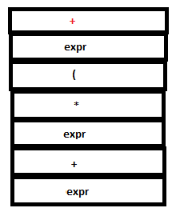
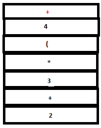
PARSE STACK-AFTER SHIFT ATTRIBUTE STACK-AFTER SHIFT
14. Since there are no matching rules, another shift action is executed. Lex returns DIGIT for ‘5’.
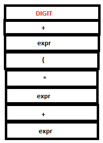
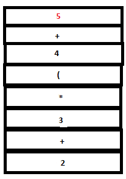
PARSE STACK-AFTER SHIFT ATTRIBUTE STACK-AFTER SHIFT
15. A reduction by the rule expr:DIGIT takes place.
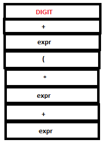
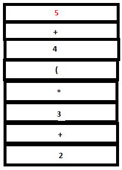
PARSE STACK-BEFORE READ ATTRIBUTE STACK-BEFORE READ
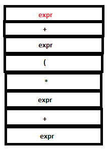

PARSE STACK-AFTER READ ATTRIBUTE STACK-AFTER READ
16. The parse stack now contains ‘expr + expr’. Now a reduction by the rule expr : expr ‘+’ expr takes place. The tokens ‘expr’, ‘+’ and ‘expr’ in the parse stack are replaced by a single ‘expr’. The semantic action {$$=$1+$3} executes. $1 and $3 refer to the first and third values in the attribute stack , that is, 4 and 5 respectively. Hence the value of the head($$), ‘expr’, is set to 4+5(=9). ‘4’ ,’+’, and ‘5’ are popped out from the stack and ‘9’ is pushed in.
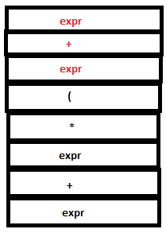
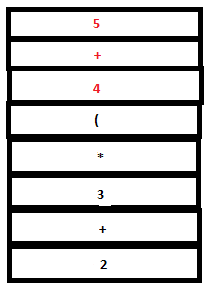
PARSE STACK-BEFORE READ ATTRIBUTE STACK-BEFORE READ
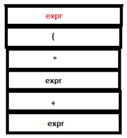
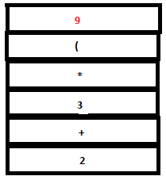
PARSE STACK-AFTER READ ATTRIBUTE STACK-AFTER READ
17. Since there are no matching reductions, a shift action takes place. Lexer returns the literal token ‘)’ which is pushed to both parser stack and attribute stack.
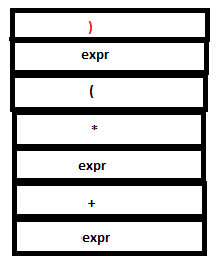
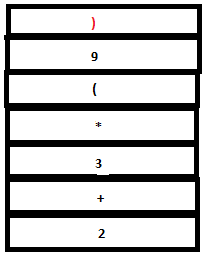
PARSE STACK-AFTER SHIFT ATTRIBUTE STACK-AFTER SHIFT
18. Now a reduction by the rule expr: ‘(‘ expr ‘)’ takes place. The tokens ‘(‘ , expr and ‘)’ in the parser stack are replace by a single expr and the symbols ‘(‘ ,’9’ and ‘)’ in the attribute stack are replaced by ‘9’. (Since the semantic action sets $$ to $2 which is ‘9’).
 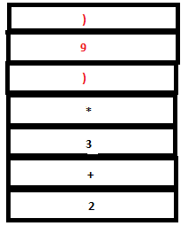
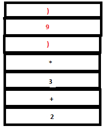
PARSE STACK-BEFORE READ ATTRIBUTE STACK-BEFORE READ
 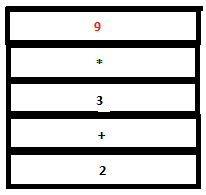
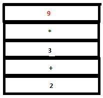
PARSE STACK-AFTER READ ATTRIBUTE STACK-AFTER READ
19. Now we have expr*expr on the top of the parser stack. Reduction by the rule expr: expr ‘*’ expr occurs. The tokens ‘expr’, ‘*’ and ‘expr’ are removed from the parse stack and a single ‘expr’ is pushed instead. The symbols ‘3’, ‘*’ and ‘9’ are replaced by ‘27’ (that is, 3*9) in the attribute stack.
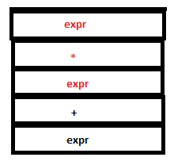
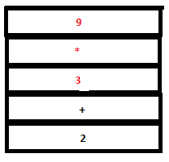
PARSE STACK-BEFORE READ ATTRIBUTE STACK-BEFORE READ
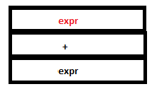
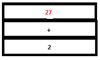
PARSE STACK-AFTER READ ATTRIBUTE STACK-AFTER READ
20. Reduction by the rule expr: expr ‘+’ expr takes place. Now we have a single ‘expr’ in the parser stack and ‘29’ in the attribute stack.
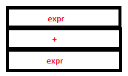
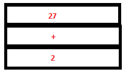
PARSE STACK-BEFORE READ ATTRIBUTE STACK-BEFORE READ

PARSE STACK-AFTER READ ATTRIBUTE STACK-AFTER READ
21. Finally, lexer returns the ‘\n’ character and the final reduction to ‘start’ occurs by the rule start: expr ‘\n’. The semantic action prints ‘29’.
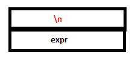
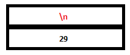
PARSE STACK-AFTER SHIFT ATTRIBUTE STACK-AFTER SHIFT
 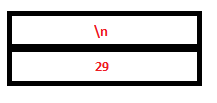
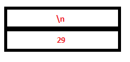
PARSE STACK-BEFORE READ ATTRIBUTE STACK-BEFORE READ
,/a
PARSE STACK-AFTER READ ATTRIBUTE STACK-AFTER READ
22. Lexer now encounters end of input (You need to enter Ctrl+D to indicate end of input as input is being read from stdout.) As a result yylex calls yywrap() which returns a non-zero value indication end of input. yylex() returns 0. (The $ in the input buffer stands for the end of input marker.)
23. When yyparse receives 0 from lexer, it returns 0 to main function to indicate that parsing was successfull.
The following table shows the configuration of the parse stack and the attribute stack at every
step of the parsing process. Assume that whenever yylex() returns a token with no attribute, yyparse() pushes a '.' to the attribute stack.
PARSE STACK
|
ATTRIBUTE STACK
|
I/P BUFFER
|
PARSER-ACTION EXECUTED
|
|
|
2 + 3 * (4 + 5) $
|
_ |
| DIGIT |
2 |
+ 3 * ( 4 + 5 ) $
|
SHIFT |
| expr |
2 |
+ 3 * ( 4 + 5 ) $ |
REDUCE |
expr +
|
2 . |
3 * ( 4 + 5 ) $ |
SHIFT |
expr + DIGIT
|
2 . 3 |
* ( 4 + 5 ) $ |
SHIFT |
expr + expr
|
2 . 3 |
* ( 4 + 5) $
|
REDUCE |
expr + expr *
|
2 . 3 . |
( 4 + 5 ) $ |
SHIFT |
expr + expr * (
|
2 . 3 . . |
4 + 5 ) $
|
SHIFT |
expr + expr * ( DIGIT
|
2 . 3 . . 4 |
+ 5 ) $ |
SHIFT |
expr + expr * ( expr
|
2 . 3 . . 4 |
+ 5 ) $ |
REDUCE |
expr + expr * ( expr +
|
2 . 3 . . 4 . |
5 ) $ |
SHIFT |
expr + expr * ( expr + DIGIT
|
2 . 3 . . 4 . 5 |
) $
|
SHIFT |
expr + expr * ( expr + expr
|
2 . 3 . . 4 . 5 |
) $
|
REDUCE |
expr + expr * ( expr
|
2 . 3 . . 9 |
) $
|
REDUCE |
expr + expr * ( expr )
|
2 . 3 . . 9 . |
$ |
SHIFT |
expr + expr * expr
|
2 . 3 . 9 |
$ |
REDUCE |
expr + expr
|
2 . 27 |
$ |
REDUCE |
| expr |
29 |
$ |
REDUCE |
| $expr |
29 |
$ |
ACCEPT |
Customising Attribute Types
YYSTYPE
The attribute stack consists of attributes of tokens as well as synthesized attributes. The macro YYSTYPE denotes the type of the attribute stack. For example, in the above production, $$,$1 and $3 are all of the type YYSTYPE. YYSTYPE is int by default. The macro definition
#define YYSTYPE int
can be found in the y.tab.c file. YACC automatically declares yylval to be of the type YYSTYPE.
Since by default, YACC defines YYSTYPE to be the type int, only integer valued attributes can be passed from yylex() to yyparse() and only integer attributes can be synthesized by default. If we were to attempt to assign any other value to yylval or any of the attribute stack variables, a type error would be flagged on compiling y.tab.c using gcc.
We will now see how to handle attributes of types other than integer.
The default definition of YYSTYPE can overriden with any built-in or userdefined data type. For example if we wanted to print the prefix form of an expression:
expr: expr OP expr { printf("%c %c %c",$2,$1,$3);}
The type of YYSTYPE can be overriden manually as shown below. The following line has to be added to the declarations section of the YACC program. This may be used (not recommended) to change the type of all the attributes from int to some other type.
#define char YYSTYPE;
In general, YACC sets the type of yylval to that defined by YYSTYPE. Hence, in this case, only character variables and constants can be assigned to yylval.
Exercise:
1. Set YYSTYPE to char and do Infix to postfix conversion where lexemes are either operators or single characters instead of numbers.
Sample input: a+b*c
Sample output: abc*+
Hint: This is similar to infix to postfix conversion in stage 2. Here we need to output the lexemes of a token instead of just the token names. Here each lexeme is a single character. Use yylval to pass the lexemes as the attribute values for each token.
2. Set YYSTYPE to char* and do symbolic infix to postfix conversion:
Sample input: hello+my*world
Sample output: hello my world * +
3. Set YYSTYPE to char* and do symbolic infix to prefix conversion:
Sample input: hello+my*world
Sample output: * + hello my world
IMPORTANT NOTE: Now the attribute values to be passed are strings like “hello”. Hence YYSTYPE has to be set to char*. YACC sets the type of yylval to char*. Hence yylval can hold a pointer to a character string. Note that yytext holds the lexeme that was most recently read by yylex(). Hence, if we were to assign yytext directly to yylval, then yylval would point to this lexeme as required. When yylex() returns the token to yyparse(), this pointer gets pushed to the attribute stack corresponding to the token. However, this method fails because the location that yytext points to gets overwritten when the next lexeme is read from the input by yylex(). Hence the previously read string would be lost from that location. This corrupts the data referenced by the pointer in the attribute stack. To avoid this problem, separate memory should be allocated (using malloc) and the string in yytext should be copied (using strcpy) to this memory and yylval should be set to the newly allocated store. (Alternately the library function strdup may be used. This function allocates a new space, duplicates the string provided as input into this space and returns pointer to it.)
Example
Let us look at an example program that creates an expression tree by setting YYSTYPE to a user defined type.
Sample input: 33+42*(21-16)
Intermediate data structure:
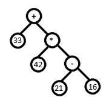
Sample output: 243
To build such a data structure, we will use a user defined type tnode containing the following fields:
int flag - We will set this to 0 or 1 to indicate whether the node is a leaf node storing an integer value (like 16 ) or an internal node storing an operator (like +).
int val – To store the value in case of leaf node.
char op- To store the operator in case of internal node
struct tnode *right- To store pointer to right child.
struct tnode *left- To store pointer to left child.
Once this is done, we will set YYSTYPE to this type using #define.
We will create a header file by the name exptree.h for the necessary declarations. This file is to be included in the lex and yacc programs.
NOTE : Always keep declarations in a header file, function definitions in .c file and include them in your yacc file. This would keep your code clean.
exprtree.h
As the lexer scans the input, it should recognise two types of tokens – numbers and operators. ( In the following example we have used literal tokens to indicate each of the operators '+' , '-', '*', '/'. ) The attribute value corresponding to these tokens can be made to indicate which number/operator was read. We will pack this information in the node structure tnode mentioned above .
exprtree.l
Notice that yylval is assigned a pointer to newly allocated (using malloc) node of type node. This is possible because we have already set YYSTYPE to node * and hence yylval assumes this type. Thus, for each token that is a number (DIGIT) or operator(returned as literal tokens '+', '-' , '*', '/' ) that is recognized by the lexer, we pack the information in a node structure and a pointer to this node is passed as attribute to the parser. During reductions, the semantic actions specified in the parser will set the left and the right pointers of these nodes appropriately to complete the creation of the expression tree. We will see how these actions are executed in detail next.
exprtree.y
The following .c file gives the required function definitions.
Let us now see how the expression tree for the sample input 33+42*(21 - 16) was created.
1. On reading the lexeme 33, the lexer recognizes the lexeme as a DIGIT and creates a node, setting its val field to 33. The flag field is set to 0 indicating that the node contains an integer. This node is passed to the parser by setting yylval to a pointer to this node. The token DIGIT is returned by the lexer to the parser. This means that this pointer is pushed into the attribute stack as the value corresponding to the token DIGIT pushed into the parser stack. Note that we have set YYSTYPE to node * so that the attribute stack can hold a pointer to a node structure.
 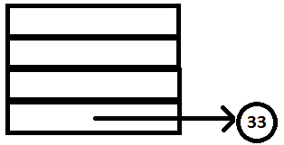
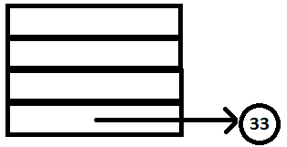
PARSE STACK-AFTER SHIFT ATTRIBUTE STACK-AFTER SHIFT
2. Yacc reduces DIGIT to expr following the rule expr : DIGIT and sets the attribute value of expr to the attribute value of INTEGER which is the pointer to the node containing 3. Yacc then calls yylex for the next token.


PARSE STACK-AFTER READ ATTRIBUTE STACK-AFTER READ
3. On reading + lexer creates a node and sets its op field to +. The flag field is set to 1 indicating that the node contains an operator. This node is passed to the parser by setting yylval to a pointer to this node.
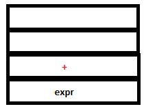
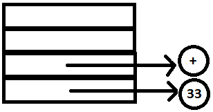
PARSE STACK-AFTER SHIFT ATTRIBUTE STACK-AFTER SHIFT
4. Since no rule in matched in YACC, yylex is called for the next token.
5. Similar to step 1, the Lexer returns a node containing 42 and a reduction similar to step 2 takes place in the parser.
 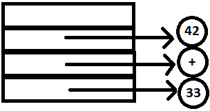
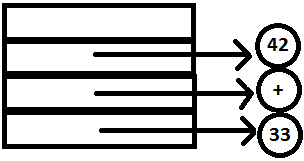
PARSE STACK-AFTER SHIFT ATTRIBUTE STACK-AFTER SHIFT


PARSE STACK-AFTER READ ATTRIBUTE STACK-AFTER READ
Note that the reduction expr : expr ‘+’ expr does not take place since * has higher precedence over +. The look-ahead hence tells the parser to shift and not reduce [LINK].
6. ‘*’ is read and returned similar to step 3. No reduction takes place in YACC since there are no matching rules.
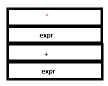
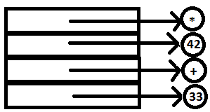
PARSE STACK-AFTER SHIFT ATTRIBUTE STACK-AFTER SHIFT
7. The literal token ‘(‘ is read by lexer and passed to YACC. Again, no reduction takes place.
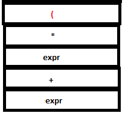

PARSE STACK-AFTER SHIFT ATTRIBUTE STACK-AFTER SHIFT
8. The integer 21 is read passed to YACC and subsequent reduction takes place similar to steps 1 and 2.
 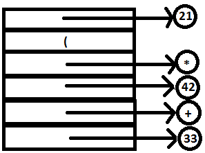
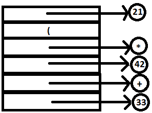
PARSE STACK-AFTER SHIFT ATTRIBUTE STACK-AFTER SHIFT
 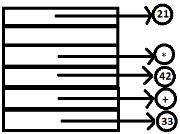
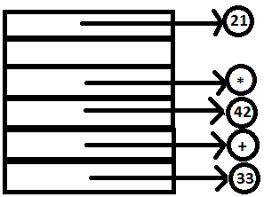
PARSE STACK-AFTER READ ATTRIBUTE STACK-AFTER READ
9. The operator ‘-‘ is read passed to YACC similar to step 3.
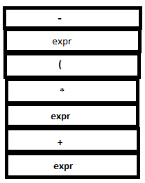
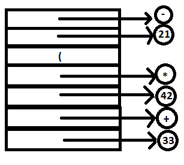
PARSE STACK-AFTER SHIFT ATTRIBUTE STACK-AFTER SHIFT
10. The integer 16 is read passed to YACC and subsequent reduction takes place similar to steps 1 and 2.
PARSE STACK-AFTER SHIFT ATTRIBUTE STACK-AFTER SHIFT
PARSE STACK-AFTER READ ATTRIBUTE STACK-AFTER READ
11. Now the reduction expr: expr ‘-‘ expr can take place. The nodes containing 21 and 16 are set to the l and r fields of the node containing ‘-‘ and the pointer to ‘-‘ is now the attribute value of the head. The bottom most part of the tree has been created.
PARSE STACK-AFTER READ ATTRIBUTE STACK-AFTER READ
12. The literal token ‘(‘ is read and returned. The reduction expr: ‘(‘ expr ‘)’ can now take place. Note how operator precedence is overridden using parentheses.
PARSE STACK-AFTER SHIFT ATTRIBUTE STACK-AFTER SHIFT
PARSE STACK-AFTER READ ATTRIBUTE STACK-AFTER READ
13. Now the reduction expr: expr ‘*‘ expr can take place. The nodes containing 4 and ‘-‘ are set to the l and r fields of the node containing ‘*‘ and the pointer to ‘*‘ is now the attribute value of the head. The tree now looks like this:

PARSE STACK-AFTER READ ATTRIBUTE STACK-AFTER READ
14. Now the reduction expr: expr ‘+‘ expr can take place. The nodes containing 33 and ‘*‘ are set to the l and r fields of the node containing ‘+‘ and the pointer to ‘+‘ is now the attribute value of the head. The whole tree now looks like this: has been created.
PARSE STACK-AFTER READ ATTRIBUTE STACK-AFTER READ
15. Lexer now reads ‘\n’ and finally the reduction program: expr ‘\n’ takes place and the function evaluate is called with the rot node containing ‘+’ passed as argument.
PARSE STACK-AFTER SHIFT ATTRIBUTE STACK-AFTER SHIFT
PARSE STACK-AFTER READ ATTRIBUTE STACK-AFTER READ
16. An inorder evaluation of the tree returns 243 which is printed as result.
But in order to have multiple custom attribute values, YACC offers a useful feature called %union to customize the type of YYSTYPE. %union is useful when we require to have different tokens of different types. For example if we wanted some tokens to be of the type int and some tokens to be of the type char. The following code segment can be added to declarations section of the YACC program to achieve that.
/* YACC Auxiliary declarations*/
/* YACC Declarations*/
%union
{
char character;
int integer;
};
%token OP
%token NUMBER
%type <character> OP
%type <integer> NUMBER
%%
expr: expr OP expr { printf("%c %d %d",$2,$1,$3); }
| DIGIT { $$=$1; }
;
%%
/* Auxiliary functions */
Note that the type of the attribute of each token must be mentioned when the token is being declared using the following syntax.
%token tokenname
%type <token-type> tokenname
'token-type' must be declared under %union prior to use in the declaration of a token. If the type of a token is not explicitly mentioned, no attribute value can be assigned to the token i.e, it is assumed to be of type void.
References
For further details on the topics covered in this document, the reader may refer to the following :
- 1. Compilers : Principles,Techniques and Tools by Alfred V.Aho, Monica S. Lam, Ravi Sethi and Jeffrey D.Ulman .
- 2. Modern Compiler Implementation in C by Andrew W.Appel
- 3. Flex & Bison by John Levine
- 4. http://dinosaur.compilertools.net/